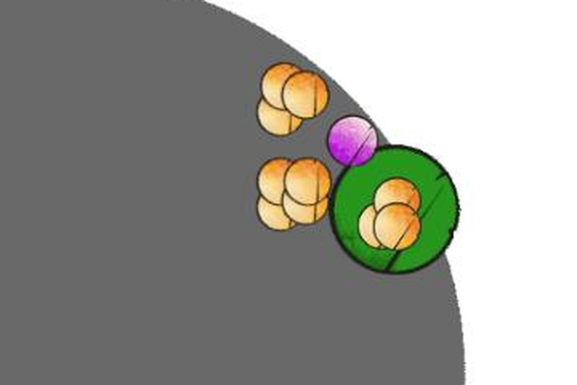
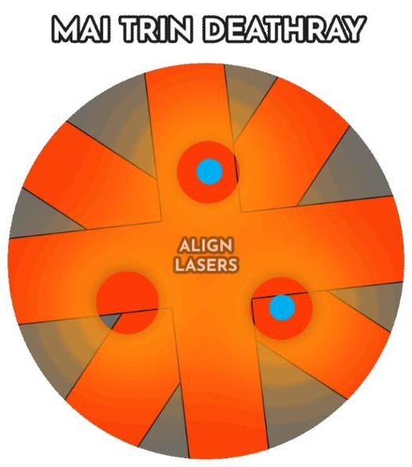
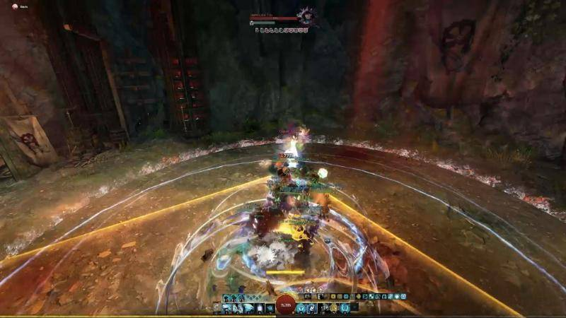
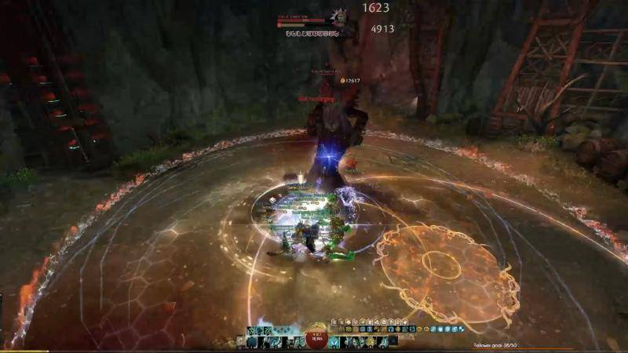
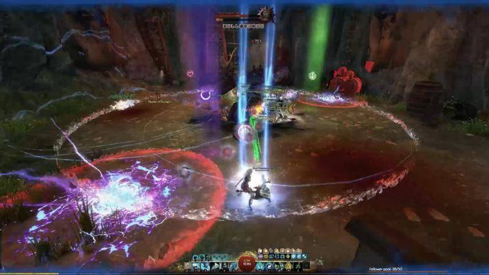
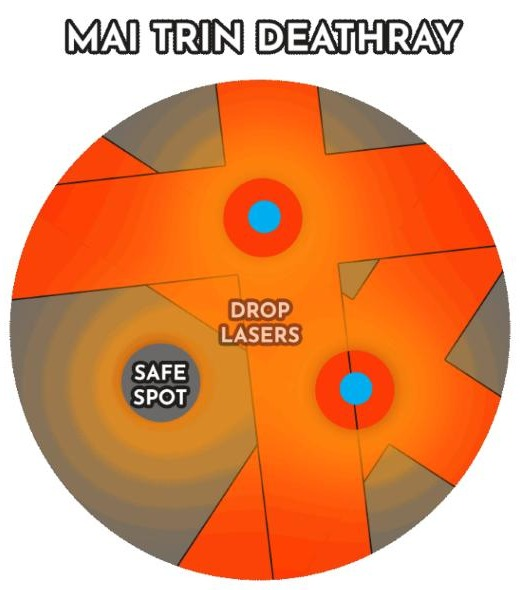

Exposed vermeiden – alles andere folgt daraus
Jeder Stack = +25 % Schaden. Quellen: Mais Cleave (nur Tank vorne) · fremde Tether-AoE im Split (Abstand!) · Slam-Welle von Scarlet. Mit Stacks töten dich Orbs und Wellen. Cleanse in der Gruppe hilft.
Guild Wars 2 · Strike Challenge Mode · 10 Spieler
Du kennst den Normal Mode? Dann reicht der erste Abschnitt.
Jeder Stack = +25 % Schaden. Quellen: Mais Cleave (nur Tank vorne) · fremde Tether-AoE im Split (Abstand!) · Slam-Welle von Scarlet. Mit Stacks töten dich Orbs und Wellen. Cleanse in der Gruppe hilft.
Wer im Green stand, hat Photon Saturation (10 Min.) → zweites Green = Tod. 4 Leute = Overstack (Orbs kreisen). NE-Phantom zuerst töten – zwei Greens im Split = zu wenig DPS.
Welle springen, blocken, ausweichen – sie gibt Exposed. In der Mitte des Slams = sofort down.
Spiral-Orbs sind für Spieler mit Exposed tödlich. Mehrere Reflect-Quellen mitnehmen:
Ab 80 % treffen die blauen Blitze 2 Spieler, öfter als im NM. Beide übereinander am Rand zwischen Süd und West ablegen. Nie im NE (Green-Phantom).
2 Spieler bekommen ein Laser-Kreuz. ① Eine Bombe zerstören = einziger Safe Spot. ② Laser per Spezialaktionstaste an die anderen 2 Bomben hängen – so drehen, dass sie den Safe Spot nicht kreuzen. ③ Alle in den Safe Spot. Bomben spawnen immer gleich → Commander markiert die Safe-Bombe vorab.










| Spec | Anteil | |
|---|---|---|
| Mechanist | 18,8 % | |
| Virtuoso | 8,1 % | |
| Troubadour | 8,1 % | |
| Ritualist | 6,6 % | |
| Tempest | 4,9 % | |
| Chronomancer | 4,5 % | |
| Amalgam | 4,3 % | |
| Firebrand | 3,2 % | |
| Scourge | 2,7 % | |
| Specter / Luminary | 2,6 % |
| Spec | Ø DPS | Top |
|---|---|---|
| Holosmith | 17.976 | 19.052 |
| Soulbeast | 17.126 | 20.771 |
| Daredevil | 16.907 | 19.064 |
| Willbender | 16.369 | 21.372 |
| Amalgam | 16.225 | 22.975 |
| Berserker | 16.066 | 19.470 |
| Spellbreaker | 16.029 | 17.815 |
| Renegade | 15.856 | 18.951 |
| Mechanist | 15.709 | 19.844 |
| Vindicator | 15.471 | 20.037 |
| Rolle | Specs | Warum |
|---|---|---|
| DPS sicher & beliebt | Mechanist, Virtuoso, Ritualist, Amalgam | Mechanist ist mit Abstand am meisten gespielt – Mech macht weiter Schaden, während du Mechaniken läufst. |
| DPS hoher Schaden | Soulbeast, Daredevil, Willbender, Berserker, Spellbreaker, Renegade, Vindicator, Holosmith | Ø über 15,5k; brauchen saubere Uptime trotz vieler Bewegungsphasen. |
| Boon-DPS / flexibel | Chronomancer, Firebrand, Luminary, Tempest, Herald, Scourge | Große Spanne zwischen Ø und Top-DPS → werden als Support und als (Boon-)DPS gespielt. |
| Heal-Support | Troubadour, Paragon, Specter, Catalyst, Druid | Ø-DPS unter 2k → in CM-Logs praktisch nur als Heiler. Troubadour ist der klar häufigste Heiler. |
Komp-Faustregel: 4 Supports + 6 DPS passt perfekt zum Buddy-System bei den Greens (2 × 3 DPS seitlich, Supports vorne).
Mechanist · Amalgam · Holosmith · Scrapper
Firebrand · Luminary · Willbender · Dragonhunter
Virtuoso · Chronomancer · Troubadour · Mirage
Tempest · Weaver · Catalyst · Evoker
Ritualist · Scourge · Reaper · Harbinger
Renegade · Vindicator · Herald · Conduit
Daredevil · Deadeye · Specter · Antiquary
Berserker · Spellbreaker · Bladesworn · Paragon
Soulbeast · Untamed · Galeshot · Druid
Bilder & Mechaniken: Hardstuck – Aetherblade Hideout (CM) Guide · GW2 Wingman – Captain Mai Trin